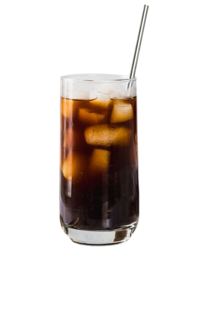

Espresso is a strong and rich coffee madefrom finely ground coffee beans. It has abold taste and is served in a small cup.
Caramel Coffee is a delicious coffee made with rich coffee,creamy milk, and sweet caramel syrup It has a smooth,sweet, and slightly roasted flavor.

Americano is a classic coffee made by combining rich espresso with hot water.It has a blod,smooth taste and is perfect forpeople who enjoy strong coffee without milk.
Fresh Fruit Juice is a refreshing drink made with freshly selected fruits selected fruits.it is naturally sweet,juicy,and perfect for a healthy and refreshing break.